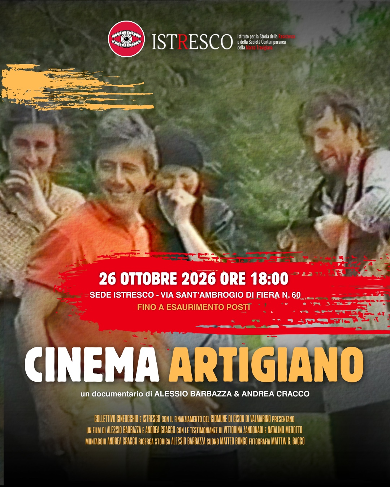

Cinema Artigiano
Un omaggio a Natalino Merotto
Cinema, Resistenza, Pace: queste tre parole riassumono perfettamente le passioni di Natalino Merotto, e quindi non sorprende che quando il Comune di Fano, nei primi anni '80, fece un bando per premiare a livello nazionale i migliori video su questo tema, lui propose ai suoi studenti di partecipare, con la telecamera della scuola e tanti effetti "fatti in casa". Da questa prima avventura, intitolata Il gatto è sul tetto da una parola d'ordine partigiana, ne seguirono molte altre: il Combai, l'Albania con le testimonianze di Resistenza de I colori dell'Aquila… Oggi Istresco (l'Istituto per la Storia della Resistenza e della Società contemporanea della Marca Trevigiana - https://istresco.org/) organizza la proiezione del pregevolissimo documentario Cinema Artigiano, di Alessio Barbazza e Andrea Cracco: un omaggio a Natalino Merotto, e al suo lavoro per la memoria della Resistenza (e non solo). Come figlia di Natalino, forse sono di parte, ma credo che il suo lavoro sia davvero interessante, di grande qualità, e che meriti pertanto di essere conservato e mostrato a quanti desiderino vederlo. Insieme con Istresco e ANPI, spero dunque di poter organizzare altre proiezioni e altri modi di pubblicizzare il lavoro di mio papà. Per ora condivido qui la locandina di questa "prima": e l'emozione che provo davanti a questo documentario, come la gratitudine nei confronti dei bravissimi film-maker che lo hanno realizzato, non è facile da descrivere, quindi lascio che sia il cortometraggio a parlare.